This is the full illustrated version of a teaching presentation prepared by Dr. Maninder Singh (GMCH Amritsar). Every slide is shown below with its text, so you can read it like an article — or download the original PowerPoint (.pptx) to teach from it. Topics covered include: Epidemiology & Burden of ACL Injuries; Knee Anatomy — Ligaments & ACL Bundle Structure; Clinical Assessment — History & Examination; MRI Findings in ACL Tear; Graft Selection — Comparison Table; Why Graft Diameter Matters — Evidence; Surgical Technique — Arthroscopic ACL Reconstruction.
Contents — jump to a slide (23)
- ACL RECONSTRUCTION
- Epidemiology & Burden of ACL Injuries
- Knee Anatomy — Ligaments & ACL Bundle Structure
- Clinical Assessment — History & Examination
- MRI Findings in ACL Tear
- Graft Selection — Comparison Table
- Why Graft Diameter Matters — Evidence
- Surgical Technique — Arthroscopic ACL Reconstruction
- Arthroscopic Landmarks — Intraoperative Views
- Fixation Devices — Comparison
- Post-operative Rehabilitation — Phase Protocol
- Return-to-Sport Criteria — Functional Tests
- Complications & Their Management
- Re-rupture Risk Factors & Prevention
- Revision ACL Reconstruction — Assessment & Planning
- Recent Evidence & Key Trials
- Patient-Reported Outcomes — IKDC & ACL-RSI
- Long-term: Osteoarthritis After ACL Injury
- CASE STUDY 1 — Young Footballer ACL + Meniscus
- CASE STUDY 2 — Revision ACL in Female Athlete
- ACL Management Algorithm
- Future Directions — Biological & Technical Advances
- CONCLUSIONS
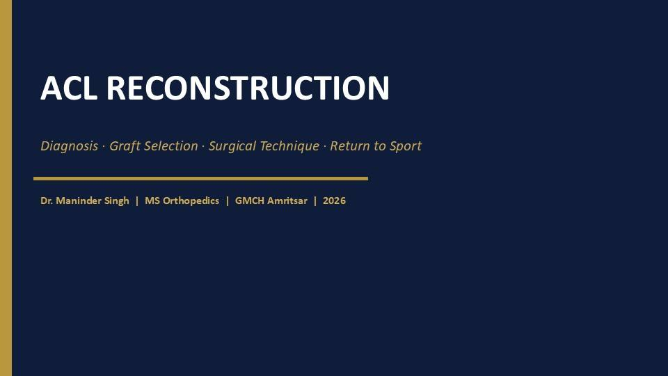
ACL RECONSTRUCTION
- Diagnosis · Graft Selection · Surgical Technique · Return to Sport
- Dr. Maninder Singh | MS Orthopedics | GMCH Amritsar | 2026
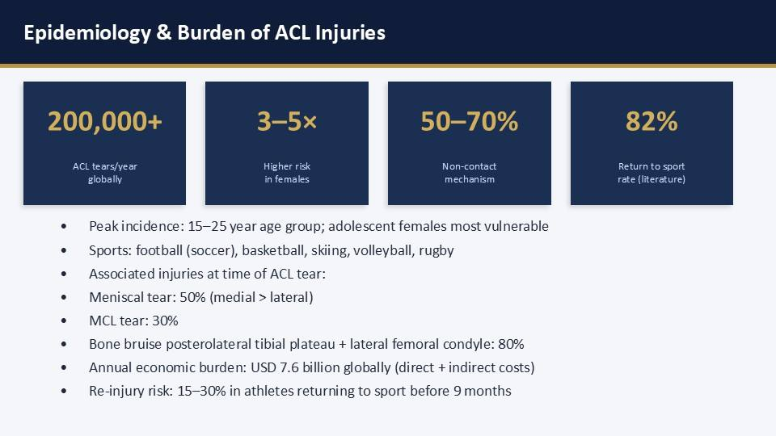
Epidemiology & Burden of ACL Injuries
- 200,000+
- ACL tears/year
- globally
- 3–5×
- Higher risk
- in females
- 50–70%
- Non-contact
- mechanism
- 82%
- Return to sport
- rate (literature)
- Peak incidence: 15–25 year age group; adolescent females most vulnerable
- Sports: football (soccer), basketball, skiing, volleyball, rugby
- Associated injuries at time of ACL tear:
- Meniscal tear: 50% (medial > lateral)
- MCL tear: 30%
- Bone bruise posterolateral tibial plateau + lateral femoral condyle: 80%
- Annual economic burden: USD 7.6 billion globally (direct + indirect costs)
- Re-injury risk: 15–30% in athletes returning to sport before 9 months
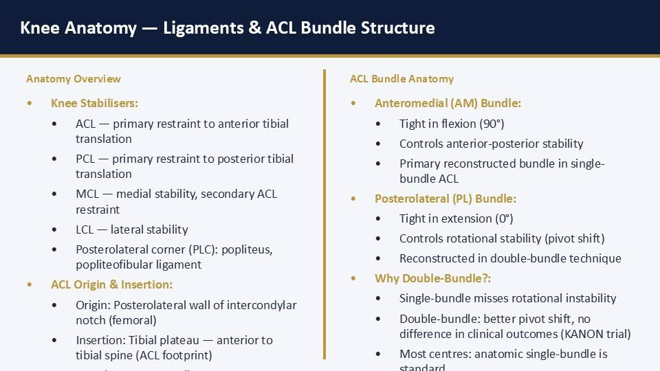
Knee Anatomy — Ligaments & ACL Bundle Structure
- Anatomy Overview
- Knee Stabilisers:
- ACL — primary restraint to anterior tibial translation
- PCL — primary restraint to posterior tibial translation
- MCL — medial stability, secondary ACL restraint
- LCL — lateral stability
- Posterolateral corner (PLC): popliteus, popliteofibular ligament
- ACL Origin & Insertion:
- Origin: Posterolateral wall of intercondylar notch (femoral)
- Insertion: Tibial plateau — anterior to tibial spine (ACL footprint)
- Length: 32–38 mm, diameter 10–12 mm
- ACL Function:
- Limits anterior tibial translation (primary — 85%)
- Limits internal tibial rotation (secondary)
- Limits hyperextension
- ACL Bundle Anatomy
- Anteromedial (AM) Bundle:
- Tight in flexion (90°)
- Controls anterior-posterior stability
- Primary reconstructed bundle in single-bundle ACL
- Posterolateral (PL) Bundle:
- Tight in extension (0°)
- Controls rotational stability (pivot shift)
- Reconstructed in double-bundle technique
- Why Double-Bundle?:
- Single-bundle misses rotational instability
- Double-bundle: better pivot shift, no difference in clinical outcomes (KANON trial)
- Most centres: anatomic single-bundle is standard
- Double-bundle reserved for high-demand athletes with rotational laxity
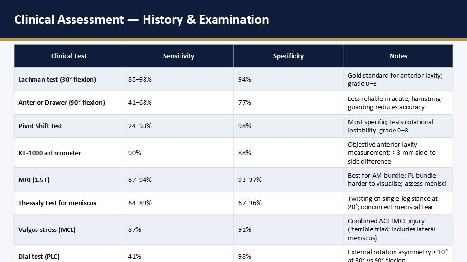
Clinical Assessment — History & Examination
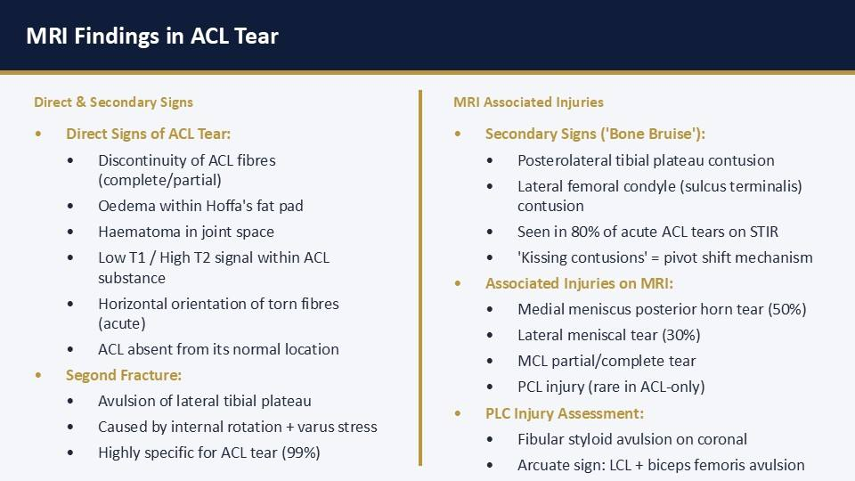
MRI Findings in ACL Tear
- Direct & Secondary Signs
- Direct Signs of ACL Tear:
- Discontinuity of ACL fibres (complete/partial)
- Oedema within Hoffa's fat pad
- Haematoma in joint space
- Low T1 / High T2 signal within ACL substance
- Horizontal orientation of torn fibres (acute)
- ACL absent from its normal location
- Segond Fracture:
- Avulsion of lateral tibial plateau
- Caused by internal rotation + varus stress
- Highly specific for ACL tear (99%)
- MRI Associated Injuries
- Secondary Signs ('Bone Bruise'):
- Posterolateral tibial plateau contusion
- Lateral femoral condyle (sulcus terminalis) contusion
- Seen in 80% of acute ACL tears on STIR
- 'Kissing contusions' = pivot shift mechanism
- Associated Injuries on MRI:
- Medial meniscus posterior horn tear (50%)
- Lateral meniscal tear (30%)
- MCL partial/complete tear
- PCL injury (rare in ACL-only)
- PLC Injury Assessment:
- Fibular styloid avulsion on coronal
- Arcuate sign: LCL + biceps femoris avulsion
- Asymmetric joint space widening
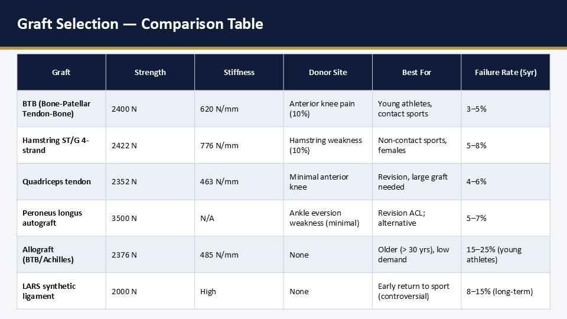
Graft Selection — Comparison Table
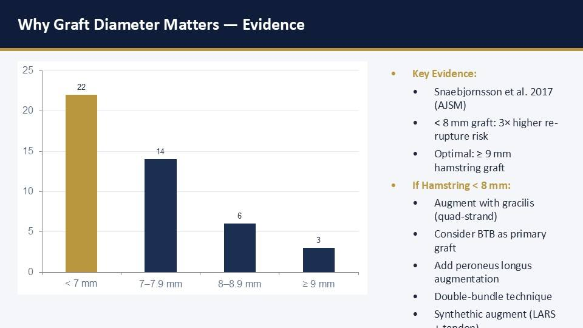
Why Graft Diameter Matters — Evidence
- Key Evidence:
- Snaebjornsson et al. 2017 (AJSM)
- < 8 mm graft: 3× higher re-rupture risk
- Optimal: ≥ 9 mm hamstring graft
- If Hamstring < 8 mm:
- Augment with gracilis (quad-strand)
- Consider BTB as primary graft
- Add peroneus longus augmentation
- Double-bundle technique
- Synthethic augment (LARS + tendon)
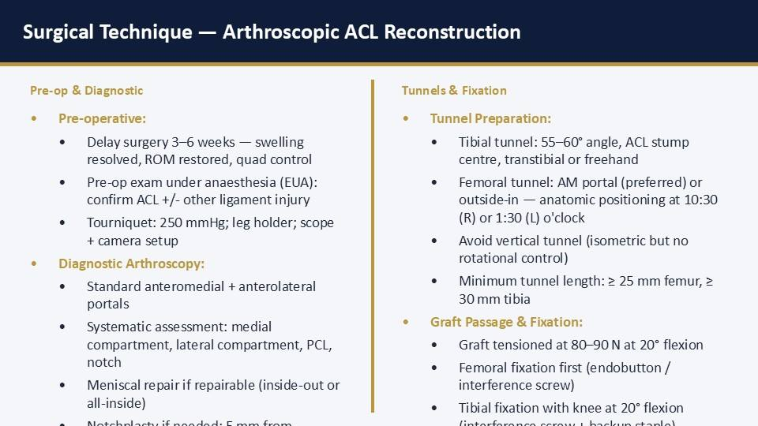
Surgical Technique — Arthroscopic ACL Reconstruction
- Pre-op & Diagnostic
- Pre-operative:
- Delay surgery 3–6 weeks — swelling resolved, ROM restored, quad control
- Pre-op exam under anaesthesia (EUA): confirm ACL +/- other ligament injury
- Tourniquet: 250 mmHg; leg holder; scope + camera setup
- Diagnostic Arthroscopy:
- Standard anteromedial + anterolateral portals
- Systematic assessment: medial compartment, lateral compartment, PCL, notch
- Meniscal repair if repairable (inside-out or all-inside)
- Notchplasty if needed: 5 mm from cartilage edge
- Tunnels & Fixation
- Tunnel Preparation:
- Tibial tunnel: 55–60° angle, ACL stump centre, transtibial or freehand
- Femoral tunnel: AM portal (preferred) or outside-in — anatomic positioning at 10:30 (R) or 1:30 (L) o'clock
- Avoid vertical tunnel (isometric but no rotational control)
- Minimum tunnel length: ≥ 25 mm femur, ≥ 30 mm tibia
- Graft Passage & Fixation:
- Graft tensioned at 80–90 N at 20° flexion
- Femoral fixation first (endobutton / interference screw)
- Tibial fixation with knee at 20° flexion (interference screw + backup staple)
- Knee cycled 15× before final tibial fixation
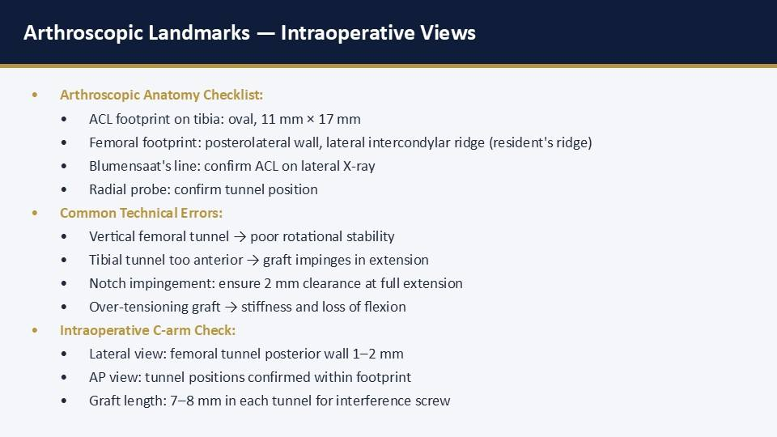
Arthroscopic Landmarks — Intraoperative Views
- Arthroscopic Anatomy Checklist:
- ACL footprint on tibia: oval, 11 mm × 17 mm
- Femoral footprint: posterolateral wall, lateral intercondylar ridge (resident's ridge)
- Blumensaat's line: confirm ACL on lateral X-ray
- Radial probe: confirm tunnel position
- Common Technical Errors:
- Vertical femoral tunnel → poor rotational stability
- Tibial tunnel too anterior → graft impinges in extension
- Notch impingement: ensure 2 mm clearance at full extension
- Over-tensioning graft → stiffness and loss of flexion
- Intraoperative C-arm Check:
- Lateral view: femoral tunnel posterior wall 1–2 mm
- AP view: tunnel positions confirmed within footprint
- Graft length: 7–8 mm in each tunnel for interference screw
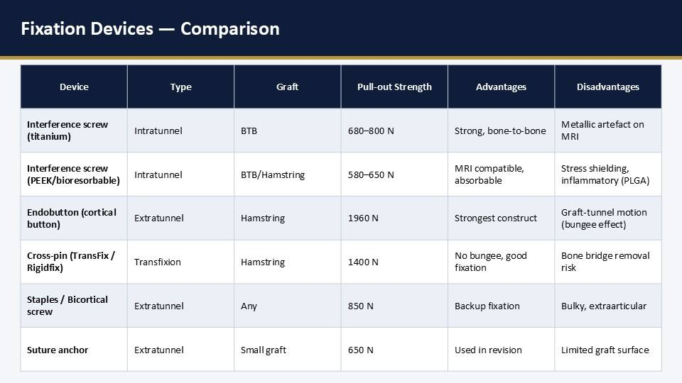
Fixation Devices — Comparison
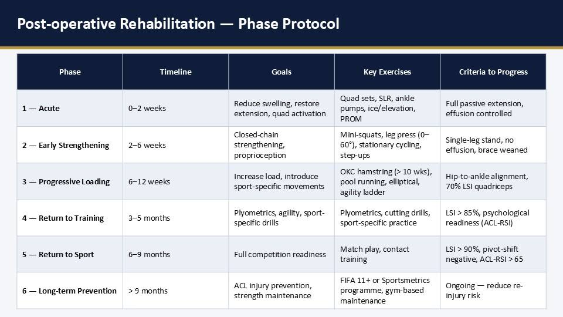
Post-operative Rehabilitation — Phase Protocol
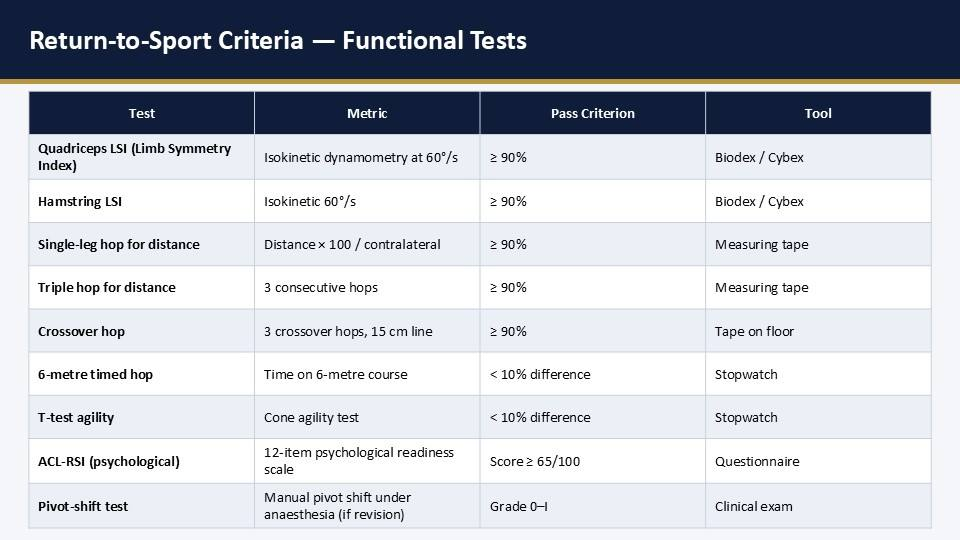
Return-to-Sport Criteria — Functional Tests
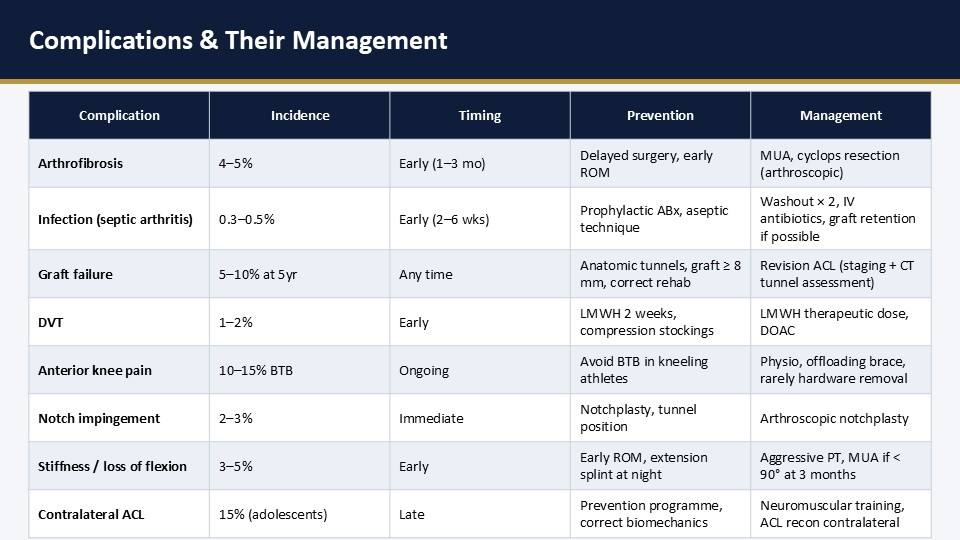
Complications & Their Management
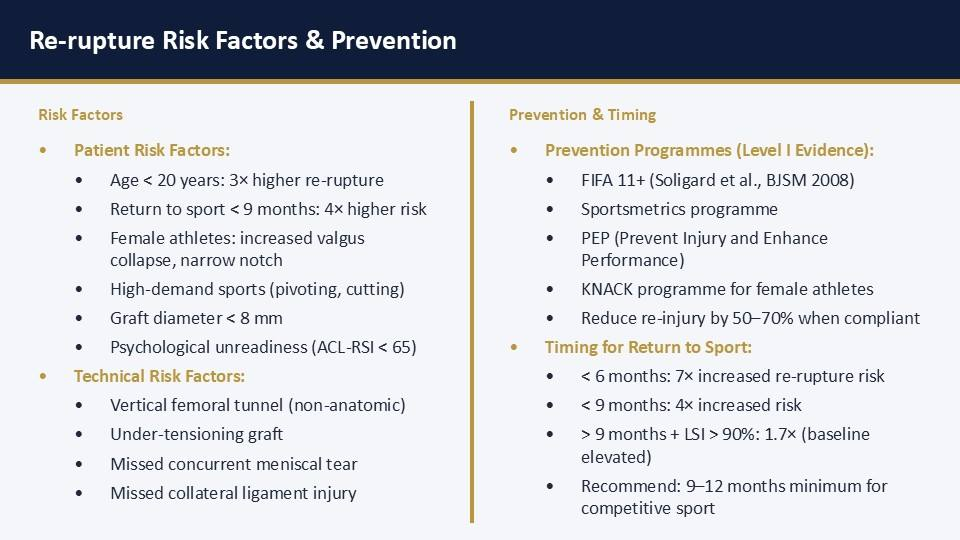
Re-rupture Risk Factors & Prevention
- Risk Factors
- Patient Risk Factors:
- Age < 20 years: 3× higher re-rupture
- Return to sport < 9 months: 4× higher risk
- Female athletes: increased valgus collapse, narrow notch
- High-demand sports (pivoting, cutting)
- Graft diameter < 8 mm
- Psychological unreadiness (ACL-RSI < 65)
- Technical Risk Factors:
- Vertical femoral tunnel (non-anatomic)
- Under-tensioning graft
- Missed concurrent meniscal tear
- Missed collateral ligament injury
- Prevention & Timing
- Prevention Programmes (Level I Evidence):
- FIFA 11+ (Soligard et al., BJSM 2008)
- Sportsmetrics programme
- PEP (Prevent Injury and Enhance Performance)
- KNACK programme for female athletes
- Reduce re-injury by 50–70% when compliant
- Timing for Return to Sport:
- < 6 months: 7× increased re-rupture risk
- < 9 months: 4× increased risk
- > 9 months + LSI > 90%: 1.7× (baseline elevated)
- Recommend: 9–12 months minimum for competitive sport
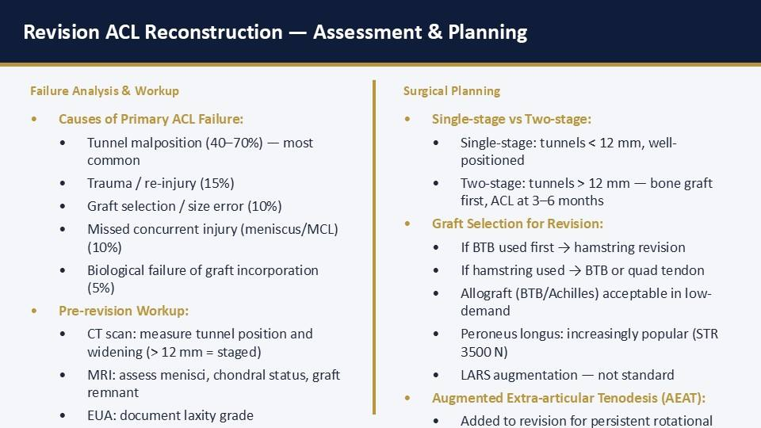
Revision ACL Reconstruction — Assessment & Planning
- Failure Analysis & Workup
- Causes of Primary ACL Failure:
- Tunnel malposition (40–70%) — most common
- Trauma / re-injury (15%)
- Graft selection / size error (10%)
- Missed concurrent injury (meniscus/MCL) (10%)
- Biological failure of graft incorporation (5%)
- Pre-revision Workup:
- CT scan: measure tunnel position and widening (> 12 mm = staged)
- MRI: assess menisci, chondral status, graft remnant
- EUA: document laxity grade
- DEXA if bone quality concern
- Surgical Planning
- Single-stage vs Two-stage:
- Single-stage: tunnels < 12 mm, well-positioned
- Two-stage: tunnels > 12 mm — bone graft first, ACL at 3–6 months
- Graft Selection for Revision:
- If BTB used first → hamstring revision
- If hamstring used → BTB or quad tendon
- Allograft (BTB/Achilles) acceptable in low-demand
- Peroneus longus: increasingly popular (STR 3500 N)
- LARS augmentation — not standard
- Augmented Extra-articular Tenodesis (AEAT):
- Added to revision for persistent rotational laxity
- Iliotibial band or gracilis tenodesis to lateral femur
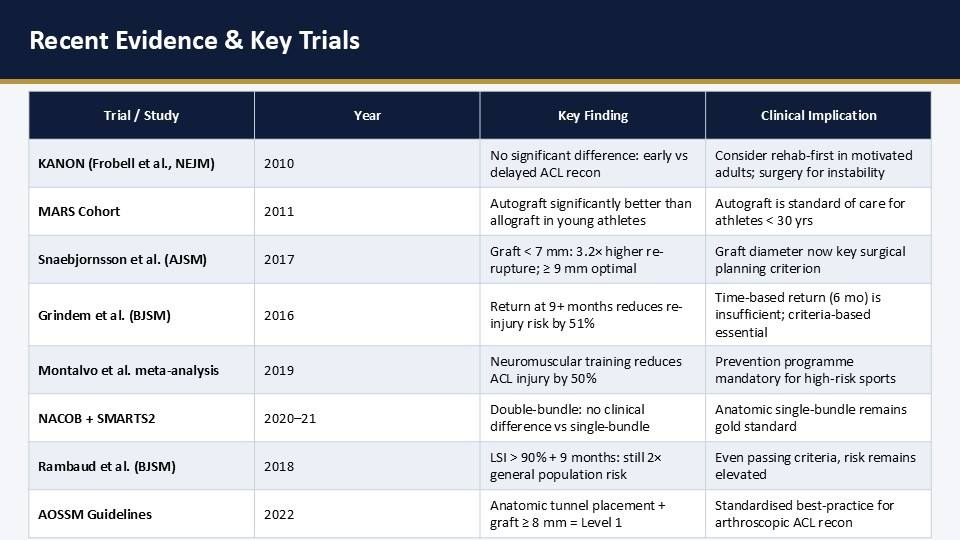
Recent Evidence & Key Trials
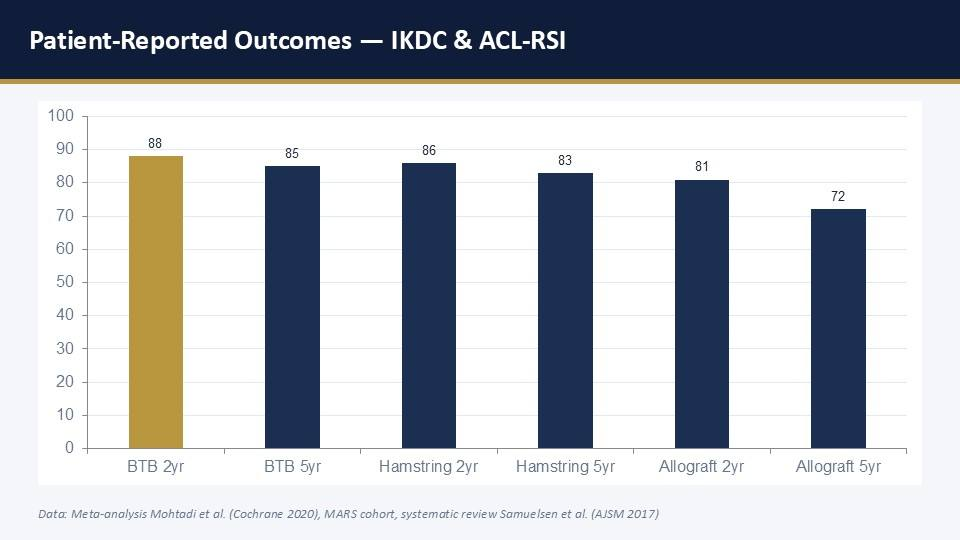
Patient-Reported Outcomes — IKDC & ACL-RSI
Data: Meta-analysis Mohtadi et al. (Cochrane 2020), MARS cohort, systematic review Samuelsen et al. (AJSM 2017)
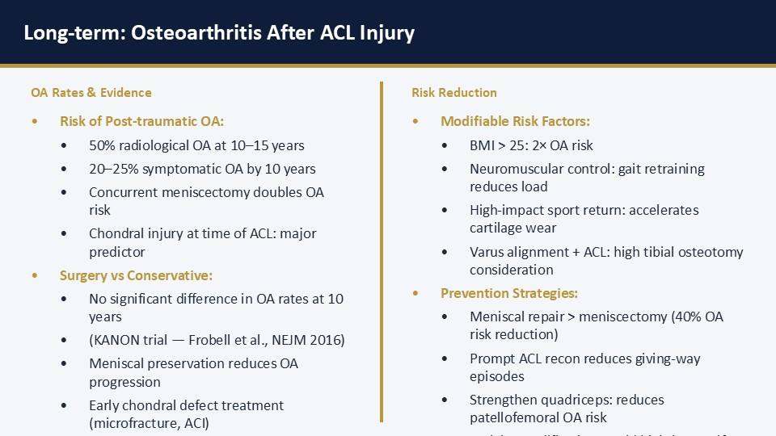
Long-term: Osteoarthritis After ACL Injury
- OA Rates & Evidence
- Risk of Post-traumatic OA:
- 50% radiological OA at 10–15 years
- 20–25% symptomatic OA by 10 years
- Concurrent meniscectomy doubles OA risk
- Chondral injury at time of ACL: major predictor
- Surgery vs Conservative:
- No significant difference in OA rates at 10 years
- (KANON trial — Frobell et al., NEJM 2016)
- Meniscal preservation reduces OA progression
- Early chondral defect treatment (microfracture, ACI)
- Risk Reduction
- Modifiable Risk Factors:
- BMI > 25: 2× OA risk
- Neuromuscular control: gait retraining reduces load
- High-impact sport return: accelerates cartilage wear
- Varus alignment + ACL: high tibial osteotomy consideration
- Prevention Strategies:
- Meniscal repair > meniscectomy (40% OA risk reduction)
- Prompt ACL recon reduces giving-way episodes
- Strengthen quadriceps: reduces patellofemoral OA risk
- Activity modification: avoid high-impact if radiological OA early
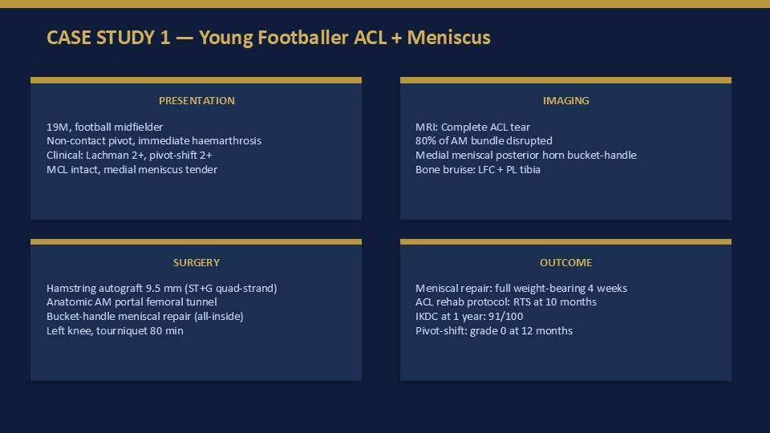
CASE STUDY 1 — Young Footballer ACL + Meniscus
- PRESENTATION
- 19M, football midfielder
- Non-contact pivot, immediate haemarthrosis
- Clinical: Lachman 2+, pivot-shift 2+
- MCL intact, medial meniscus tender
- IMAGING
- MRI: Complete ACL tear
- 80% of AM bundle disrupted
- Medial meniscal posterior horn bucket-handle
- Bone bruise: LFC + PL tibia
- SURGERY
- Hamstring autograft 9.5 mm (ST+G quad-strand)
- Anatomic AM portal femoral tunnel
- Bucket-handle meniscal repair (all-inside)
- Left knee, tourniquet 80 min
- OUTCOME
- Meniscal repair: full weight-bearing 4 weeks
- ACL rehab protocol: RTS at 10 months
- IKDC at 1 year: 91/100
- Pivot-shift: grade 0 at 12 months
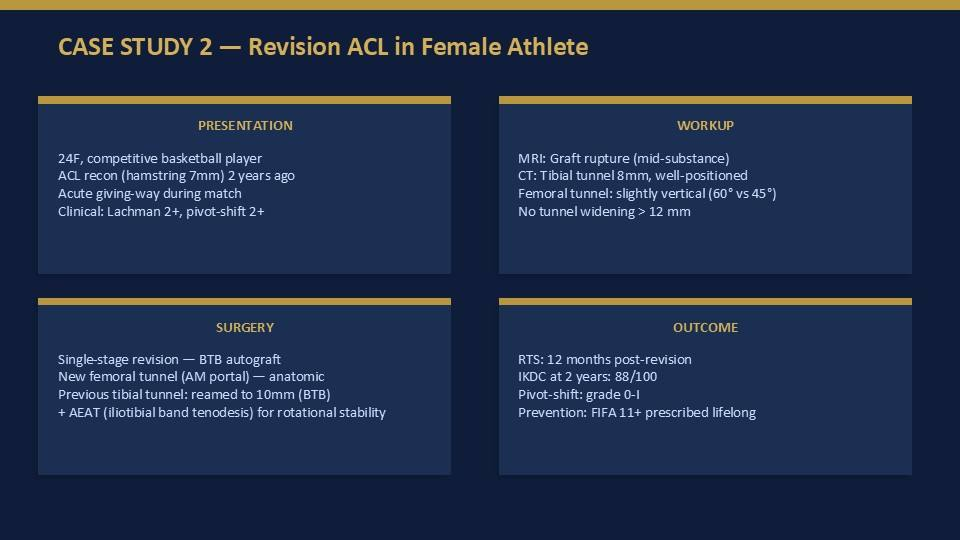
CASE STUDY 2 — Revision ACL in Female Athlete
- PRESENTATION
- 24F, competitive basketball player
- ACL recon (hamstring 7mm) 2 years ago
- Acute giving-way during match
- Clinical: Lachman 2+, pivot-shift 2+
- WORKUP
- MRI: Graft rupture (mid-substance)
- CT: Tibial tunnel 8mm, well-positioned
- Femoral tunnel: slightly vertical (60° vs 45°)
- No tunnel widening > 12 mm
- SURGERY
- Single-stage revision — BTB autograft
- New femoral tunnel (AM portal) — anatomic
- Previous tibial tunnel: reamed to 10mm (BTB)
- + AEAT (iliotibial band tenodesis) for rotational stability
- OUTCOME
- RTS: 12 months post-revision
- IKDC at 2 years: 88/100
- Pivot-shift: grade 0-I
- Prevention: FIFA 11+ prescribed lifelong
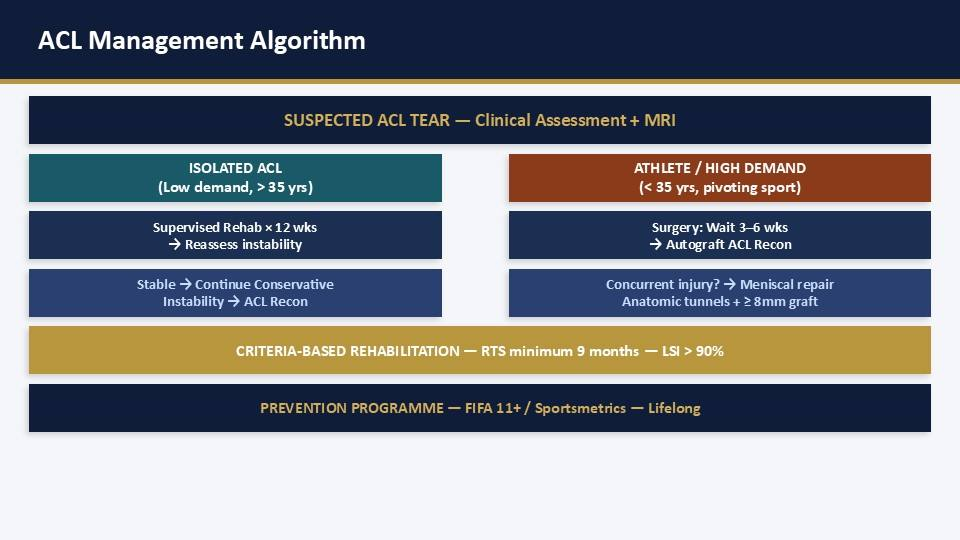
ACL Management Algorithm
- SUSPECTED ACL TEAR — Clinical Assessment + MRI
- ISOLATED ACL
- (Low demand, > 35 yrs)
- ATHLETE / HIGH DEMAND
- (< 35 yrs, pivoting sport)
- Supervised Rehab × 12 wks
- → Reassess instability
- Surgery: Wait 3–6 wks
- → Autograft ACL Recon
- Stable → Continue Conservative
- Instability → ACL Recon
- Concurrent injury? → Meniscal repair
- Anatomic tunnels + ≥ 8mm graft
- CRITERIA-BASED REHABILITATION — RTS minimum 9 months — LSI > 90%
- PREVENTION PROGRAMME — FIFA 11+ / Sportsmetrics — Lifelong
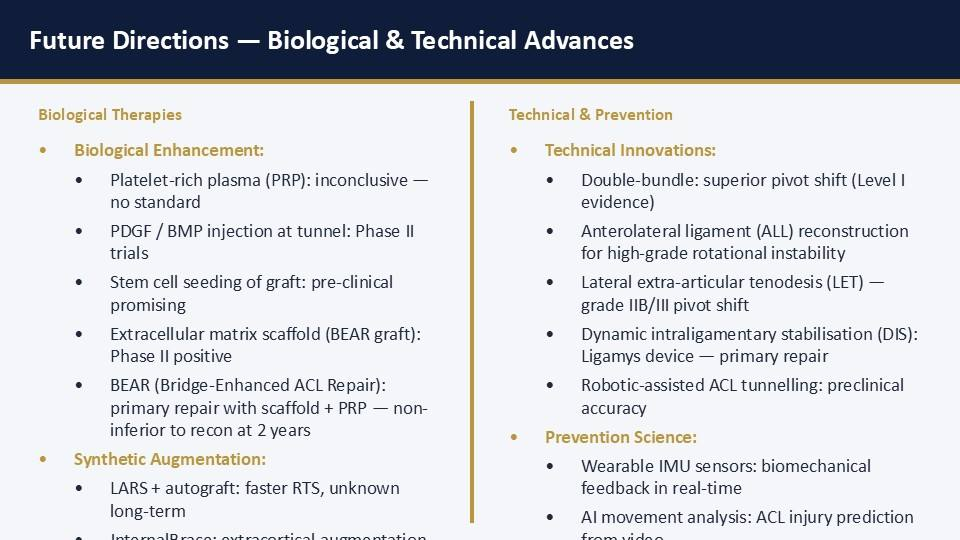
Future Directions — Biological & Technical Advances
- Biological Therapies
- Biological Enhancement:
- Platelet-rich plasma (PRP): inconclusive — no standard
- PDGF / BMP injection at tunnel: Phase II trials
- Stem cell seeding of graft: pre-clinical promising
- Extracellular matrix scaffold (BEAR graft): Phase II positive
- BEAR (Bridge-Enhanced ACL Repair): primary repair with scaffold + PRP — non-inferior to recon at 2 years
- Synthetic Augmentation:
- LARS + autograft: faster RTS, unknown long-term
- InternalBrace: extracortical augmentation
- Ligament Advanced Reinforcement System (LARS): 10-yr failure 12–15%
- Technical & Prevention
- Technical Innovations:
- Double-bundle: superior pivot shift (Level I evidence)
- Anterolateral ligament (ALL) reconstruction for high-grade rotational instability
- Lateral extra-articular tenodesis (LET) — grade IIB/III pivot shift
- Dynamic intraligamentary stabilisation (DIS): Ligamys device — primary repair
- Robotic-assisted ACL tunnelling: preclinical accuracy
- Prevention Science:
- Wearable IMU sensors: biomechanical feedback in real-time
- AI movement analysis: ACL injury prediction from video
- Genetic screening: collagen gene variants (COL5A1) — risk stratification
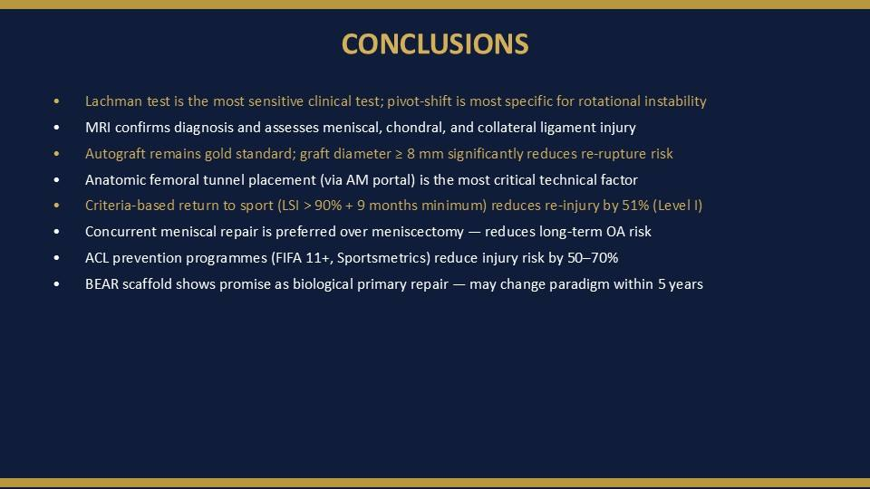
CONCLUSIONS
- Lachman test is the most sensitive clinical test; pivot-shift is most specific for rotational instability
- MRI confirms diagnosis and assesses meniscal, chondral, and collateral ligament injury
- Autograft remains gold standard; graft diameter ≥ 8 mm significantly reduces re-rupture risk
- Anatomic femoral tunnel placement (via AM portal) is the most critical technical factor
- Criteria-based return to sport (LSI > 90% + 9 months minimum) reduces re-injury by 51% (Level I)
- Concurrent meniscal repair is preferred over meniscectomy — reduces long-term OA risk
- ACL prevention programmes (FIFA 11+, Sportsmetrics) reduce injury risk by 50–70%
- BEAR scaffold shows promise as biological primary repair — may change paradigm within 5 years
Use this deck in your teaching
The original editable PowerPoint is free to download for non-commercial teaching, with credit to the author. Questions or corrections? Contact us.
About this deck
Prepared by Dr. Maninder Singh (MS Orthopaedics, Associate Professor, GMCH Amritsar) for postgraduate and clinical teaching. Where images are from open-licence sources (for example Wikimedia Commons), the licence and author appear on the slide. See our editorial policy. Educational use only — not medical advice; see Terms & Medical Disclaimer.